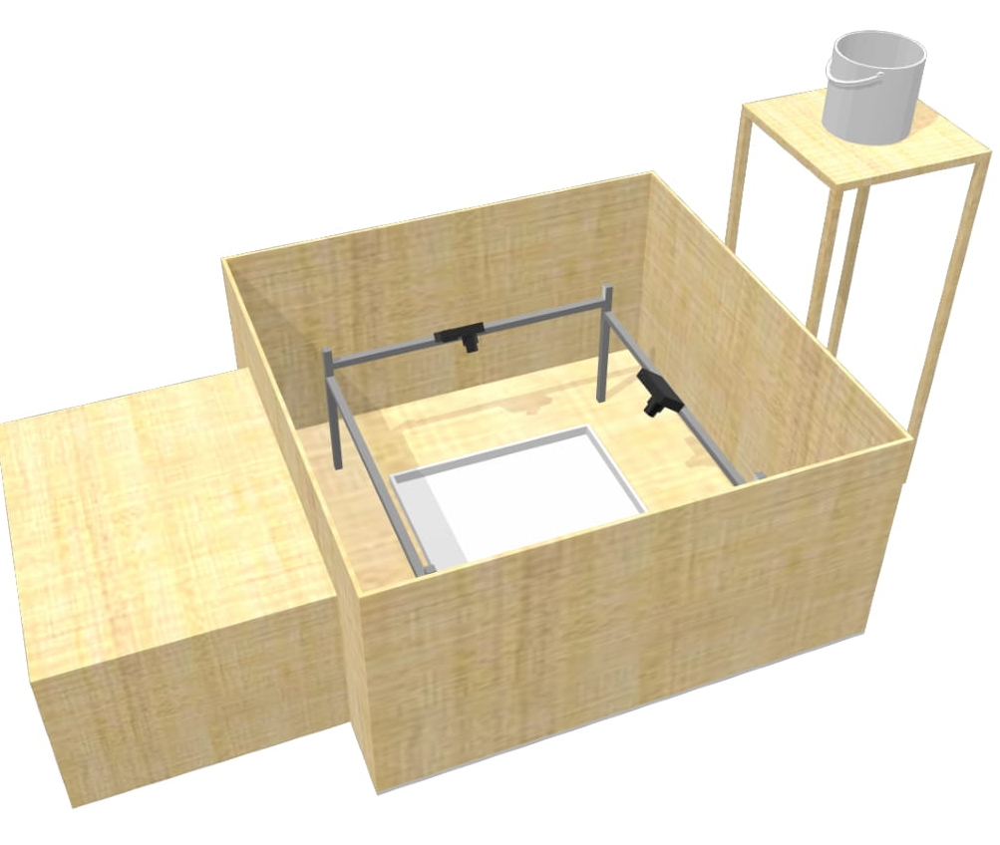

3D Recostuction
$S\begin{bmatrix} u \\ v \\ 1 \end{bmatrix}=\begin{bmatrix} \alpha _{x} & o & uo \\ o & \alpha _{y} & v_{0} \\ 0 & 0 & 1 \end{bmatrix}\begin{bmatrix} r_{11} & r_{12} & r_{13} & t_{1} \\ r_{21} & r_{22} & r_{21} & t_{2} \\ r_{31} & r_{32} & r_{33} & t_{3} \end{bmatrix}\begin{bmatrix} x \\ y \\ z \\ 1 \end{bmatrix}=K\left[ R,T\right] Q$